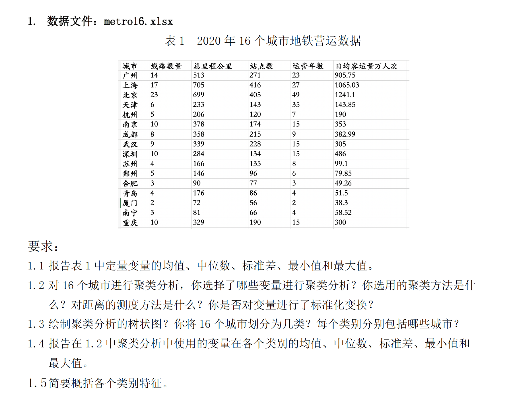
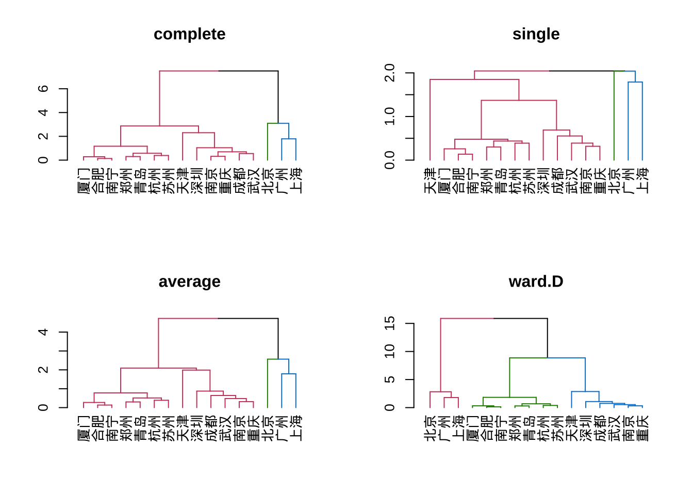
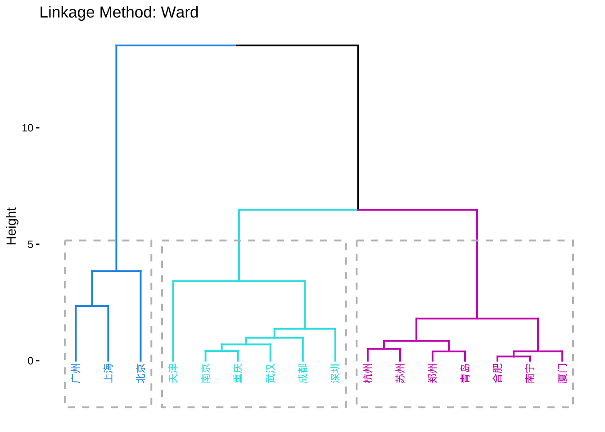
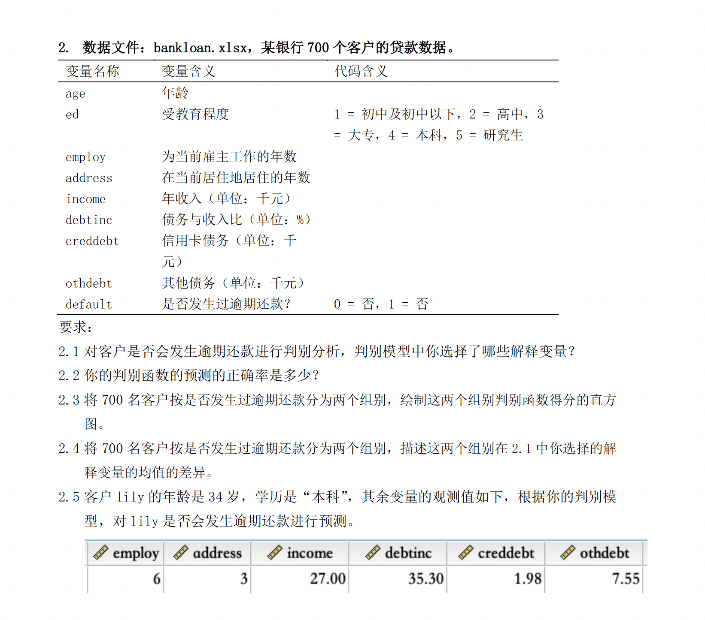
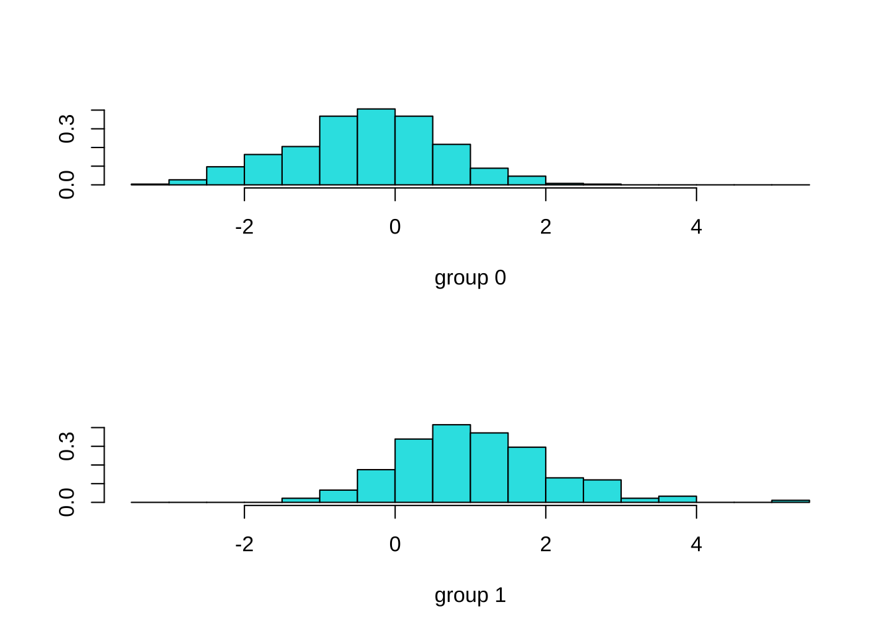
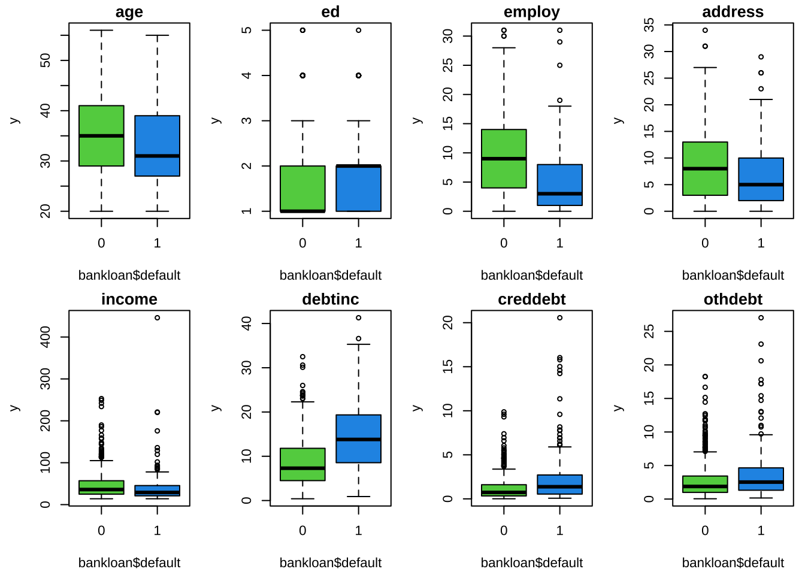
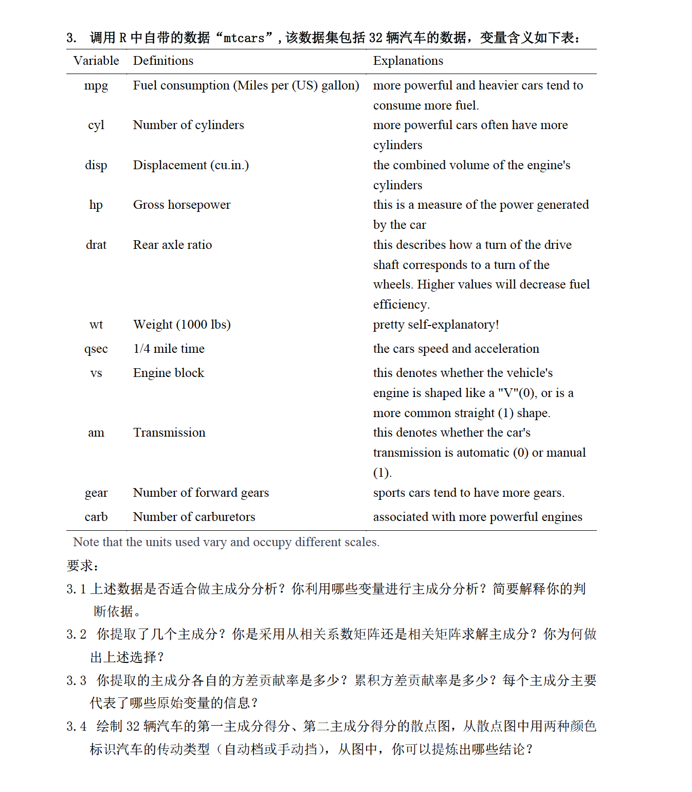
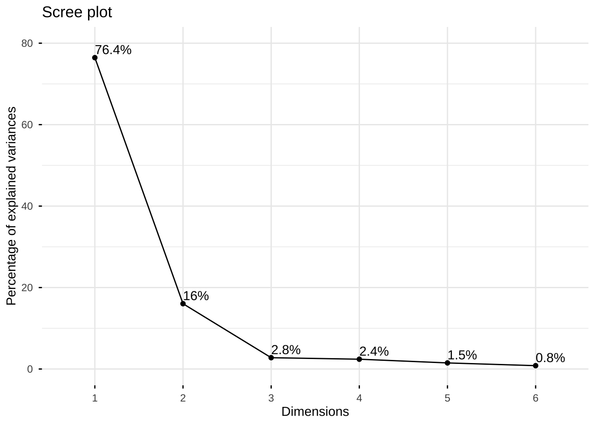
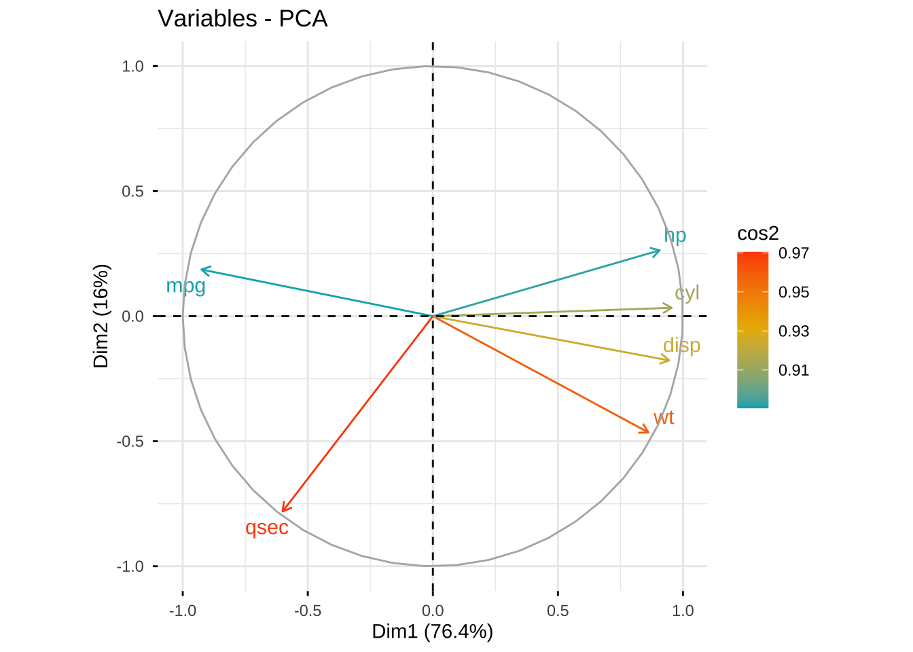
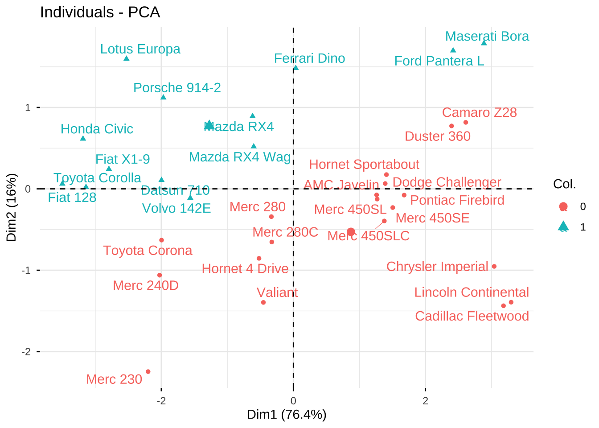

Solutions to Quiz
第一题 聚类分析
导入数据
library(readxl)
library(tidyverse)
metro16 <- read_excel("metro16.xlsx") %>% data.frame()
#给metro16增加行名
rownames(metro16) <- metro16$城市
metro16 城市 线路数量 总里程公里 站点数 运营年数 日均客运量万人次
广州 广州 14 513 271 23 905.75
上海 上海 17 705 416 27 1065.03
北京 北京 23 699 405 49 1241.10
天津 天津 6 233 143 35 143.85
杭州 杭州 5 206 120 7 190.00
南京 南京 10 378 174 15 353.00
成都 成都 8 358 215 9 382.99
武汉 武汉 9 339 228 15 305.00
深圳 深圳 10 284 134 15 486.00
苏州 苏州 4 166 135 8 99.10
郑州 郑州 5 146 96 6 79.85
合肥 合肥 3 90 77 3 49.26
青岛 青岛 4 176 86 4 51.50
厦门 厦门 2 72 56 2 38.30
南宁 南宁 3 81 66 4 58.52
重庆 重庆 10 329 190 15 300.00报告描述性统计量
library(psych)
metro16 %>% select(2:6) %>%
describe() %>%
select(mean, sd, median, min, max) mean sd median min max
线路数量 8.31 5.74 7.0 2.0 23.0
总里程公里 298.44 199.17 258.5 72.0 705.0
站点数 175.75 110.14 139.0 56.0 416.0
运营年数 14.81 13.03 12.0 2.0 49.0
日均客运量万人次 359.33 383.20 245.0 38.3 1241.1聚类分析
hclust
#设置图形排版，2行2列
par(mfrow = c(2,2))
#定义聚类方法
method <- c("complete","single","average","ward.D")
#对比四种聚类方法的树状图
library(dendextend)
for (i in 1:4) {
metro16 %>%
select(2:6) %>%
scale() %>%
dist() %>%
hclust(method = method[i]) %>%
as.dendrogram() %>%
color_branches(k = 3) %>%
plot(main = method[i])
}
#保存聚类模型
metro16.ward <- metro16 %>%
select(2:6) %>%
scale() %>%
dist() %>%
hclust(method = method[i])选择Ward.D方法，该方法下分为三类，个案数量分别为3，6，7，个案数量分布合理。
agnes
library(cluster)
library(factoextra)
metro16 %>% select(2:6) %>%
agnes(stand = TRUE, method = "ward") %>%
fviz_dend(k = 3, #分三类
cex = 0.6, # 标签字体
k_colors = c(4,5,6), #分支颜色
color_labels_by_k = TRUE, #标签上色
rect = TRUE, #添加矩形框
lower_rect = -2,
main = "Linkage Method: Ward") #矩形框下沿
metro16.agnes <- metro16 %>% select(2:6) %>%
agnes(stand = TRUE, method = "ward")选择了线路数量、总里程、站点数、运营年数和日均客运量五个变量进行聚类分析。采用了系统聚类方法，个案之间的距离用欧氏距离测度，类与类之间的距离用Ward法（离差平方和法）测度。对变量进行了标准化变换。
报告各类构成
#在metro16中追加变量cluster, 保存聚类结果
metro16$cluster <- cutree(metro16.ward, k = 3)
# 罗列各个类别包含的个案数量
table(metro16$cluster)
1 2 3
3 6 7 #第一类
metro16$城市[metro16$cluster == 1][1] "广州" "上海" "北京"#第二类
metro16$城市[metro16$cluster == 2][1] "天津" "南京" "成都" "武汉" "深圳" "重庆"#第三类
metro16$城市[metro16$cluster == 3][1] "杭州" "苏州" "郑州" "合肥" "青岛" "厦门" "南宁"报告各组描述性统计量
library(purrr)
metro16 %>%
split(.$cluster) %>%
map(summary)$`1`
城市 线路数量 总里程公里 站点数 运营年数
Length:3 Min. :14.0 Min. :513 Min. :271.0 Min. :23
Class :character 1st Qu.:15.5 1st Qu.:606 1st Qu.:338.0 1st Qu.:25
Mode :character Median :17.0 Median :699 Median :405.0 Median :27
Mean :18.0 Mean :639 Mean :364.0 Mean :33
3rd Qu.:20.0 3rd Qu.:702 3rd Qu.:410.5 3rd Qu.:38
Max. :23.0 Max. :705 Max. :416.0 Max. :49
日均客运量万人次 cluster
Min. : 905.8 Min. :1
1st Qu.: 985.4 1st Qu.:1
Median :1065.0 Median :1
Mean :1070.6 Mean :1
3rd Qu.:1153.1 3rd Qu.:1
Max. :1241.1 Max. :1
$`2`
城市 线路数量 总里程公里 站点数
Length:6 Min. : 6.000 Min. :233.0 Min. :134.0
Class :character 1st Qu.: 8.250 1st Qu.:295.2 1st Qu.:150.8
Mode :character Median : 9.500 Median :334.0 Median :182.0
Mean : 8.833 Mean :320.2 Mean :180.7
3rd Qu.:10.000 3rd Qu.:353.2 3rd Qu.:208.8
Max. :10.000 Max. :378.0 Max. :228.0
运营年数 日均客运量万人次 cluster
Min. : 9.00 Min. :143.8 Min. :2
1st Qu.:15.00 1st Qu.:301.2 1st Qu.:2
Median :15.00 Median :329.0 Median :2
Mean :17.33 Mean :328.5 Mean :2
3rd Qu.:15.00 3rd Qu.:375.5 3rd Qu.:2
Max. :35.00 Max. :486.0 Max. :2
$`3`
城市 线路数量 总里程公里 站点数
Length:7 Min. :2.000 Min. : 72.0 Min. : 56.00
Class :character 1st Qu.:3.000 1st Qu.: 85.5 1st Qu.: 71.50
Mode :character Median :4.000 Median :146.0 Median : 86.00
Mean :3.714 Mean :133.9 Mean : 90.86
3rd Qu.:4.500 3rd Qu.:171.0 3rd Qu.:108.00
Max. :5.000 Max. :206.0 Max. :135.00
运营年数 日均客运量万人次 cluster
Min. :2.000 Min. : 38.30 Min. :3
1st Qu.:3.500 1st Qu.: 50.38 1st Qu.:3
Median :4.000 Median : 58.52 Median :3
Mean :4.857 Mean : 80.93 Mean :3
3rd Qu.:6.500 3rd Qu.: 89.47 3rd Qu.:3
Max. :8.000 Max. :190.00 Max. :3 概括各类特征
第1类：北京、上海、广州，地铁运营规模最大，线路数量、总里程、站点数、运营年数大约是第2类城市的两倍，日均客运量越是第2类城市的3倍。
第2类：“天津” “南京” “成都” “武汉” “深圳” “重庆”。第2类城市，线路数量介于6-10条，总里程介于233至378公里，站点数介于134至228个。日均客运量的中位数是329万人。地铁运营规模，在国内处于中等水平。
第3类：“杭州” “苏州” “郑州” “合肥” “青岛” “厦门” “南宁”。第3类城市，线路数量介于2-5条，总里程介于71至206公里，站点数介于56至135个。运营年数介于2至8年，日均客运量的中位数是59万人。第3类城市的地铁运营规模较小，大约是第2类城市的1/5， 第1类城市1/15。
第二题 判别分析

导入数据
library(readxl)
bankloan <- read_excel("bankloan.xlsx")判别函数的估计
library(MASS)
model1.da <- lda(default ~ ., bankloan)
model1.daCall:
lda(default ~ ., data = bankloan)
Prior probabilities of groups:
0 1
0.7385714 0.2614286
Group means:
age ed employ address income debtinc creddebt othdebt
0 35.51451 1.659574 9.508704 8.945841 47.15474 8.679304 1.245493 2.773409
1 33.01093 1.901639 5.224044 6.393443 41.21311 14.727869 2.423865 3.862807
Coefficients of linear discriminants:
LD1
age 0.015331213
ed 0.078357754
employ -0.124220534
address -0.046452296
income 0.004865162
debtinc 0.096027989
creddebt 0.276338074
othdebt -0.057146598判别函数的预测正确率
#预测
model1.predict <- predict(model1.da, bankloan)
#预测组别与实际组别的列联表
tab1 <- table(bankloan$default, model1.predict$class)
tab1
0 1
0 485 32
1 99 84#预测正确率
mean(bankloan$default == model1.predict$class)[1] 0.8128571判别函数得分的分组直方图
library(MASS)
ldahist(model1.predict$x,bankloan$default)
对比两个组别的差异
#两个组别的解释变量的均值的差异
model1.da$means age ed employ address income debtinc creddebt othdebt
0 35.51451 1.659574 9.508704 8.945841 47.15474 8.679304 1.245493 2.773409
1 33.01093 1.901639 5.224044 6.393443 41.21311 14.727869 2.423865 3.862807#两个组别的解释变量的箱线图
par(mfrow = c(2,4),mai = c(0.6,0.6,0.2,0.1),cex = 0.7)
for (i in 1:8) {
y <- bankloan[[i]]
boxplot(y ~ bankloan$default, col = c(3,4,5),
main = colnames(bankloan)[i])
}
两个组别的差异： 未逾期(default = 0)和有逾期(default = 1)相比，整体而言，未逾期(default = 0)的组别年龄更大，在当前雇主的服务时长更长、在当前居住地居住时间更长、收入更高、债务与收入比更低、信用卡债务和其他债务更低。
预测新个案
#录入新个案数据
new.case <- data.frame(age = 34,
ed = 4,
employ = 6,
address = 3,
income = 27,
debtinc = 35.3,
creddebt = 1.98,
othdebt = 7.55
)
predict(model1.da, new.case)$class
[1] 1
Levels: 0 1
$posterior
0 1
1 0.06711165 0.9328884
$x
LD1
1 2.882298根据判别函数预测Lily会发生逾期还款。
第三题 主成分分析

评估数据的相关性
library(factoextra)
mtcars %>%
dplyr::select(mpg, qsec, wt, cyl, disp, hp) %>%
KMO()Kaiser-Meyer-Olkin factor adequacy
Call: KMO(r = .)
Overall MSA = 0.81
MSA for each item =
mpg qsec wt cyl disp hp
0.86 0.64 0.73 0.88 0.82 0.88 KMO等于0.814，适于降维处理。
估计主成分模型
注意题目3.2需要更正为：你提取了几个主成分，是相关系数矩阵还是协方差矩阵？你为何做出上述选择？
提取两个主成分，使用的是相关系数矩阵，因为原始变量的数量级别差距较大，采用相关系数矩阵，可以避免观测值较大的原始变量对提取结果的影响。
car.pr <- mtcars %>%
dplyr::select(mpg, qsec, wt, cyl,disp,hp) %>%
prcomp(scale = TRUE)
car.prStandard deviations (1, .., p=6):
[1] 2.1416696 0.9809970 0.4086451 0.3801105 0.2999090 0.2224322
Rotation (n x k) = (6 x 6):
PC1 PC2 PC3 PC4 PC5 PC6
mpg -0.4319266 0.19022095 -0.61557102 0.52590879 -0.0718869 0.34143803
qsec -0.2804946 -0.79584714 0.06560722 0.26481108 0.4496718 -0.10637755
wt 0.4024295 -0.47383679 0.03018494 0.08057191 -0.4978411 0.59856530
cyl 0.4458939 0.03443083 -0.43940446 -0.28406318 0.6477319 0.32660126
disp 0.4411470 -0.18033201 -0.51963422 0.20072945 -0.2371697 -0.63742311
hp 0.4235335 0.26873203 0.39084636 0.72513379 0.2626324 0.02910102确定提取的主成分的个数
#查看方差累计贡献率
summary(car.pr)Importance of components:
PC1 PC2 PC3 PC4 PC5 PC6
Standard deviation 2.1417 0.9810 0.40865 0.38011 0.29991 0.22243
Proportion of Variance 0.7645 0.1604 0.02783 0.02408 0.01499 0.00825
Cumulative Proportion 0.7645 0.9248 0.95268 0.97676 0.99175 1.00000#绘制scree plot
#标注方差贡献率, 在图中标注方差贡献率
library(factoextra)
fviz_eig(car.pr,
addlabels = TRUE, geom = c("line"),
ylim = c(0, 80))
第一主成分的方差贡献率是76%，第二主成分的方差贡献率是16%，前两个主成分的累计方差贡献率达到92%，因此保留前两个主成分即可代表原始变量绝大部分信息。
概括主成分的含义
# 绘制correlation circle,反映主成分与原始变量的关系
library(factoextra)
fviz_pca_var(car.pr,
col.var = "cos2",
gradient.cols = c("#00AFBB", "#E7B800", "#FC4E07") ,
repel = TRUE # Avoid text overlapping
)
car.pr$rotation[,1:2] PC1 PC2
mpg -0.4319266 0.19022095
qsec -0.2804946 -0.79584714
wt 0.4024295 -0.47383679
cyl 0.4458939 0.03443083
disp 0.4411470 -0.18033201
hp 0.4235335 0.26873203第一主成分与wt、cyl、disp和hp正相关，与mpg, qsec负相关。其中qsec的系数为-0.28，绝对值最小，其对第一主成分得分的影响较弱 。 当wt、cyl、disp和hp的值越大，也就是汽车的重量、气缸数、排量和马力越大，PC1的值越大。 当mpg的值越小，也就是越耗油，PC1的值越大。 因此，PC1主要反映了汽车在动力、油耗方面的表现，在PC1上得分越高，意味者汽车的动力越强、耗油量大。
第二主成分的mpg、cyl、hp的系数都为正，但是其数值都较小，其对第2主成分得分的影响较弱。 第二主成分的qsec、wt、disp的系数都为负，其中disp的绝对值较小，因此第二主成分主要代表了qsec、wt的信息。qsec的值越小，1/4英里的耗时越少，第二主成分得分的值越大。wt的值越小，车重越小，第二主成分得分的值越大。 因此，PC2主要反映了汽车在加速快、车重轻巧方面的表现，在PC2上得分越高，意味者汽车重量小、加速快。
第一主成分和第二主成分得分散点图
# am = 0, 自动挡；am = 1, 手动档
fviz_pca_ind(car.pr,
col.ind = as.factor(mtcars$am),
repel = TRUE)
自动挡汽车主要分布在第四象限，PC1得分较高表明其动力强、耗油大，PC2得分较低表明汽车重量大，加速慢。
手动挡汽车主要分布在第二象限，PC1得分较低表明其动力弱、省油，PC2得分较高表明汽车重量轻，加速快。